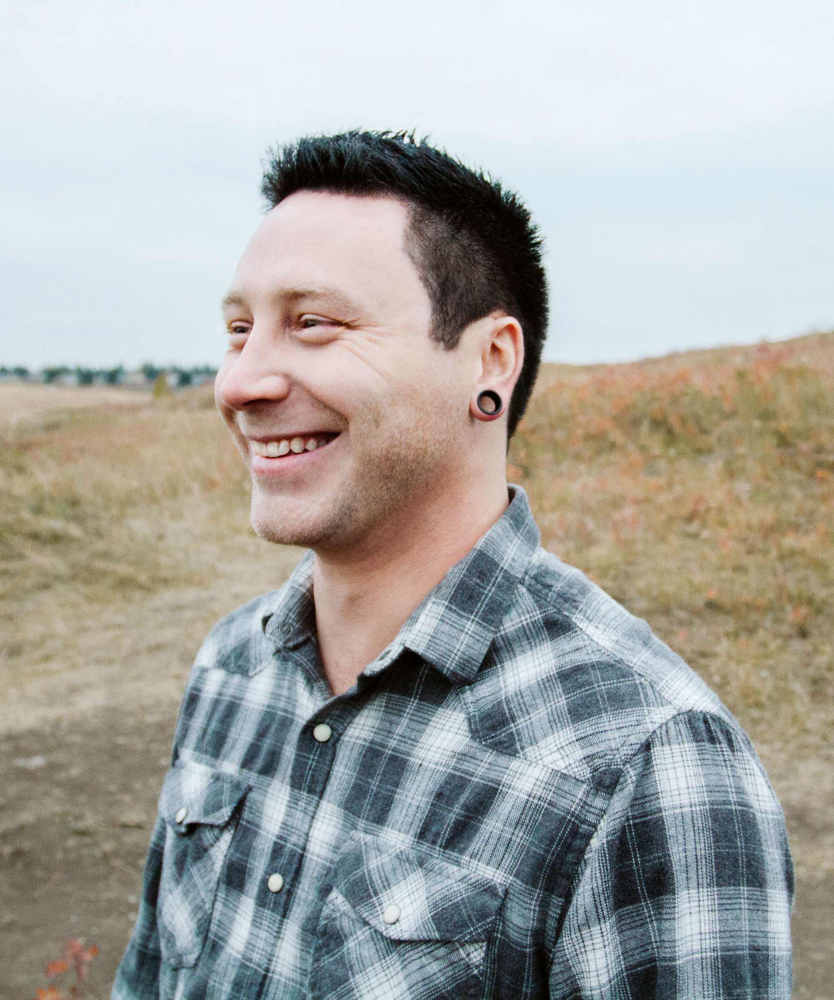

Cameron Remesz.
Hi, I'm Cameron Remesz. A front-end web developer focused on solving business problems. Based in Toronto, Ontario.
I’m an Angular/Typescript developer with 3 years web development experience. I’m self taught in Front-End Development and a graduate of Juno College of Technology’s Web Development Bootcamp. My focus is on the front-end with emphasis on JavaScript. I use my background in management to empathize and understand client requirements, create plans to achieve the desired results and bring projects to satisfactory completion. Please see my resume in the menu for contact information.